En matière financière lorsqu’on souhaite s’assurer de la bonne marche, et le bon suivi d’une société, on établit son bilan. Un bilan est un tableau comparant l’argent entré et l’argent sorti de l’entreprise. De la même manière, pour le bon fonctionnement d’un équipement, si nous voulons nous assurer de la maîtrise du procédé, nous devons connaître les quantités entrantes de matière ou d’énergie et les quantités sortantes. C’est ce que l’on appelle la loi de consommation de la masse et de l’énergie. Ces bilans peuvent être établis pour un équipement ou pour une usine complète. Comme en matière financière, un bilan est équilibré : la quantité entrante doit toujours être égale à la quantité sortante.
Le premier utilisateur du bilan d’un appareil ou d’un équipement est bien entendu son concepteur. Tant que son bilan n’est pas équilibré, cela signifie qu’une erreur traîne dans le calcul. De la même manière, lors des essais d’un équipement, si les quantités entrantes et sortantes ne sont pas égales, cela peut signifier que certaines mesures sont erronées, qu’il y a présence de fuites non décelées ou bien des phénomènes non pris en compte interviennent. Les bilans servent aussi très souvent à déterminer de façon indirecte des grandeurs non prises en compte initialement dans les calculs.
Exemple : Quelle est la quantité d’eau évaporée d’un extracteur de mâchefers, sachant qu’un extracteur de mâchefers consomme 1 m3/h d’eau, et que les mâchefers extraits représentent un tonnage de 3 t/h, ayant une humidité de 20\Le bilan matière du cycle de l’eau se présentera ainsi :
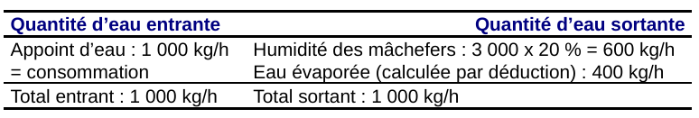
Fig. 1
Ce bilan permet de calculer le débit d’eau évaporée et d’en déduire l’incidence sur le débit des gaz de combustion (400 kg/h représentent 500 Nm3/h) et sur leur humidité.
D’autres utilisations de ces bilans sont possibles, comme par exemple la prévision des conséquences d’une modification des entrées dans le process :
Lorsque l’on souhaite établir un bilan, la première tâche consiste à délimiter de façon la plus précise les frontières (les limites) du système étudié.
Bien entendu, la tâche est d’autant plus facile que le nombre d’entrées/sorties est le plus faible possible et que chacune des entrées/sorties est bien connue.
Dans la pratique, l’établissement d’un schéma est souvent indispensable dès que l’on s’intéresse à un ensemble d’appareils.
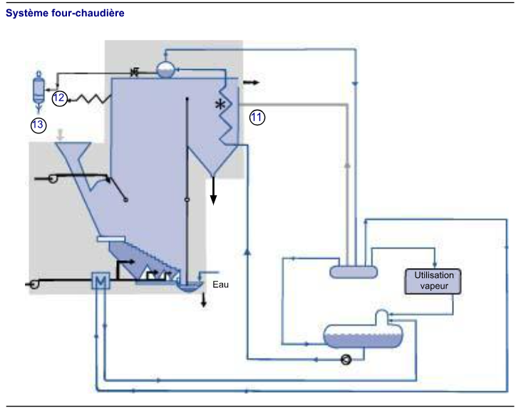
Fig. 2
Dans le schéma ci-dessus, si nous désirons analyser le système dans sa globalité, il convient d’établir un bilan des entrées et des sorties, en examinant les paramètres suivants :
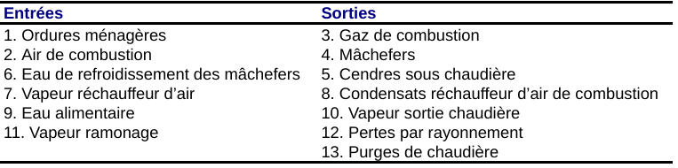
Fig. 3
En plus des précautions concernant les limites précises du système mentionnées ci-dessus, il convient bien entendu de n’établir des bilans que sur des quantités qui se conservent lors de leur passage au travers du système. En effet, dans l’exemple de l’extracteur de mâchefers, un bilan matière est possible avec l’ensemble eau liquide + vapeur, mais ce bilan aurait été erroné s’il avait été appliqué que sur la seule eau liquide. Nous pourrons ainsi établir des bilans massiques globaux, des bilans massiques portant sur un seul élément (par exemple bilan massique mercure) ou des bilans énergétiques.
D’autres précautions sont également à prendre en compte, notamment :
L’élaboration d’un bilan de masse ne pose en général pas de problème majeur. Nous donnons ci après, à titre d’information, les bilans de masse réalisés sur une UIOM type, la quantité (en grammes) de quelques métaux lourds produite par la combustion d’une tonne d’ordures ménagères.
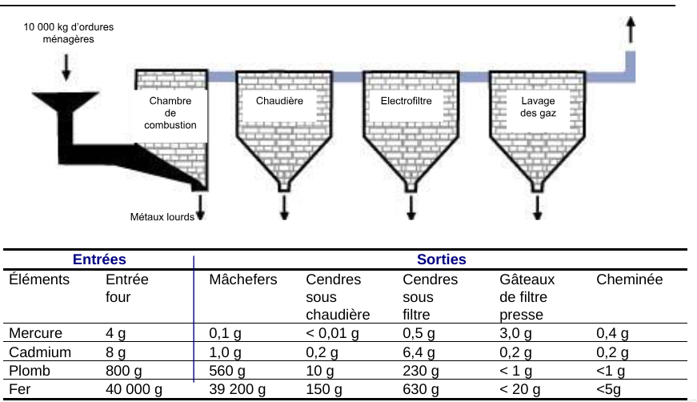
Fig. 4
L’énergie peut se manifester sous de nombreuses formes : nucléaire, chimique, thermique, électrique, mécanique… En pratique, dans nos usines, nous n’avons à considérer que l’énergie chimique de combustion (voir module 5), l’énergie thermique et l’énergie électrique. Malgré leurs noms différents, il ne s’agit en fait que de différentes formes de l’énergie, et il est possible de convertir l’une dans l’autre
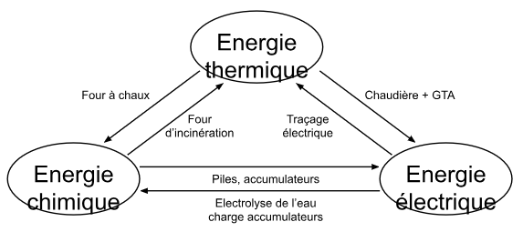
Fig. 5
Toutes ces transformations ne sont jamais parfaites, elles s’accompagnent de pertes qui se manifestent sous forme d’un dégagement de chaleur (énergie thermique). Comme dans les modules précédents, nous utiliserons comme unités le kilowatt ou le kilowattheure : 1 kWh = 3 600 kJ = 860 kcal.
Les exemples présentés dans les pages suivantes comportent des calculs de bilans d’énergie. On calcule des quantités d’énergie contenues dans les flux de matière solide, liquide ou gazeuse, à l’entrée et à la sortie de système.
Calcul d’énergie avec chaleur massiqueTel que mentionné au module 5 et dans la fiche index « Chaleur », la chaleur massique est une caractéristique propre à chaque substance car c’est la quantité d’énergie requise pour augmenter de 1 °C une masse de matière de 1 kg. La chaleur massique s’exprime en différentes unités, mais nous utiliserons ici l’unité suivante : Wh/kg. °C, ou kWh/kg. °C.
La quantité d’énergie (E) contenue dans un flux de matière est directement proportionnelle à :
On peut ainsi calculer la quantité d’énergie E par la formule suivante :
equation E = m Cm T equation
En appliquant les unités : kWh = kg kWh. x °C = kWh kg. °C
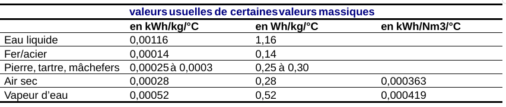
Fig. 6
Exemples de calcul d’énergie avec chaleur latenteÉnergie dégagée par 2 000 kg/h de mâchefers à 400 °C = 2 000 x 0,00025 x 400 = 200 kW. Énergie dégagée par 5 000 kg/h d’eau à 120 °C = 5 000 x 0,00116 x 120 = 696 kW.
Calcul de l’énergie par enthalpieLa chaleur massique de l’eau ne peut être utilisée pour calculer l’énergie de flux de vapeur à différentes températures et pressions. Pour ce faire, on utilise des tables ou diagrammes fournissant les valeurs de l’énergie contenue dans la vapeur à différentes conditions de pression et de température. Cette énergie est appelée enthalpie et peut s’exprimer dans différentes unités, (voir module 12, index « Chaleur latente »).
Exemples de calcul d’énergie lié au changement d’étatDans le calcul d’un bilan d’énergie, il se peut que dans le process de l’équipement, il y ait un changement d'état, par exemple de l’eau se transformant en vapeur. Dans ce cas, il faut tenir compte de l’énergie spécifique requise pour établir ce changement d’état.
Pour la vaporisation de l’eau, cette énergie est de : 0,7 kWh/kg ou 700 Wh/kg (à 100°C et 1 bar).
Dans l’extracteur à mâchefers, 230 kg/h d’eau évaporée représentent une énergie dégagée de : 230 x 0,7 = 160 kWh.
Nous allons étudier le cas d’une UIOM comprenant une ligne d’incinération de 10 t/h à PCI 2,4 kWh/kg (2 064 kcal/kg). La valorisation thermique est assurée par un GTA à condensation et par un petit réseau de chaleur de 3 MW fonctionnant en eau surchauffée à 110 °C. Le traitement des gaz de combustion est du type semi-humide, suivi par un lavage des gaz à la soude. Avant d’aborder le bilan complet, nous étudierons successivement le bilan des principaux équipements qui la composent, à savoir :
Ensuite nous établirons le bilan global de l’UIOM.
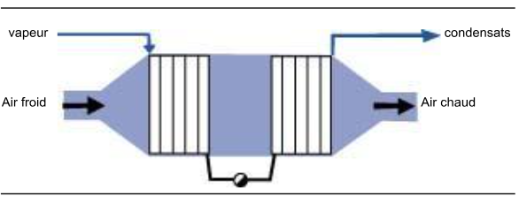
Fig. 7
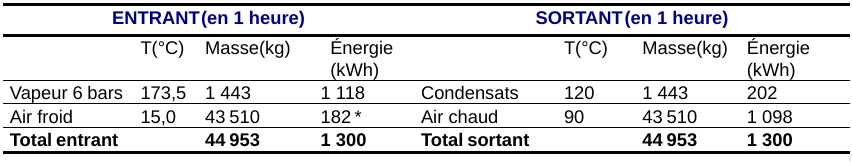
Fig. 8
* Exemple de calcul En se reportant aux exemples donnés au module 5 dans la fiche index « Chaleur », on vérifie : 43 510 x 0,28 x (15 – 0) = 182 000 Wh = 182 kWh.
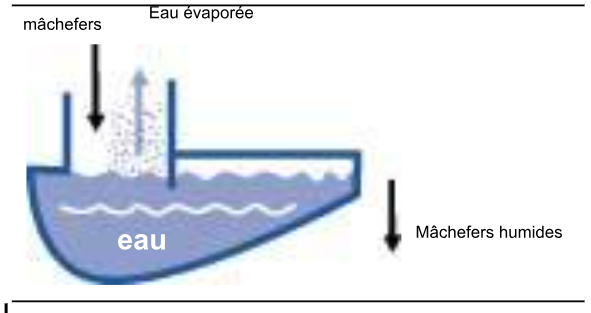
Fig. 9
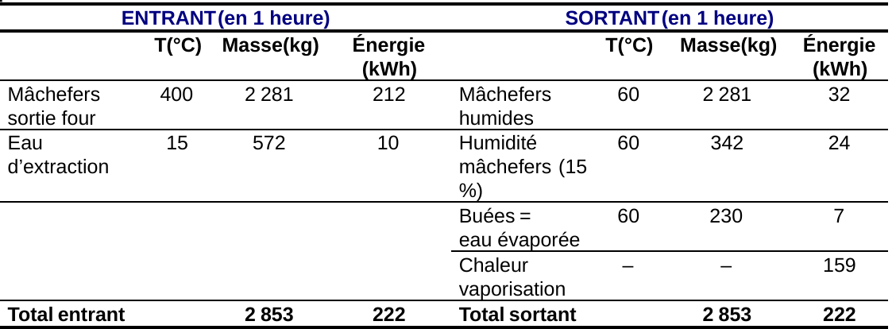
Fig. 10
La chaleur de vaporisation (0,7 kWh/kg) permet de tenir compte du fait que l’énergie des buées a ici un point de référence à 0 °C tout comme l’eau liquide, comme expliqué plus haut.
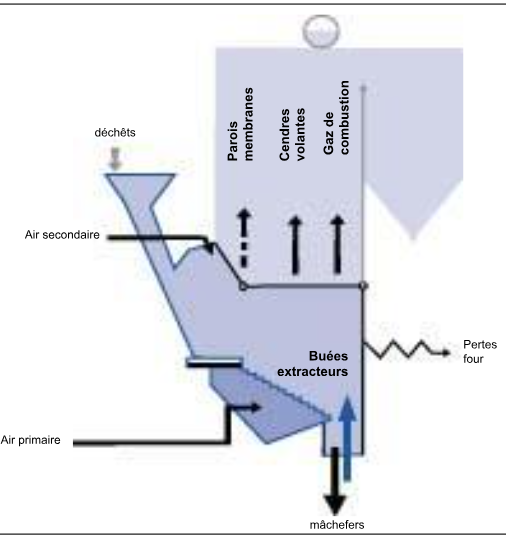
Fig. 11
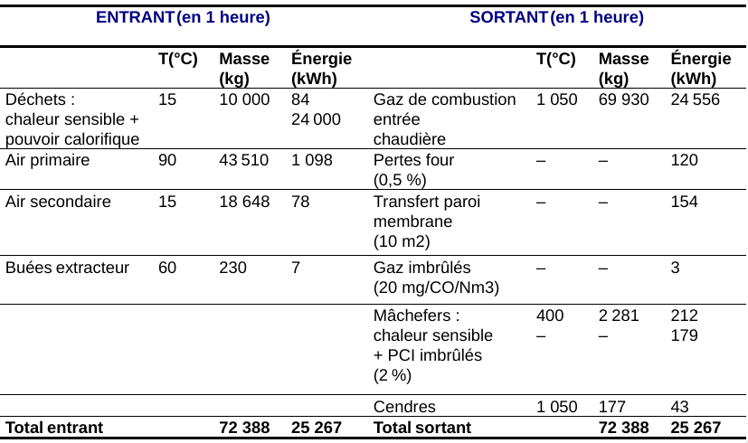
Fig. 12
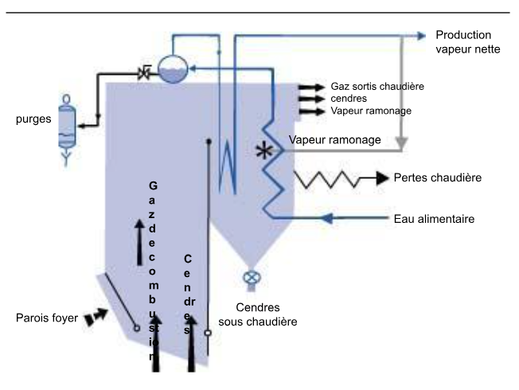
Fig. 13
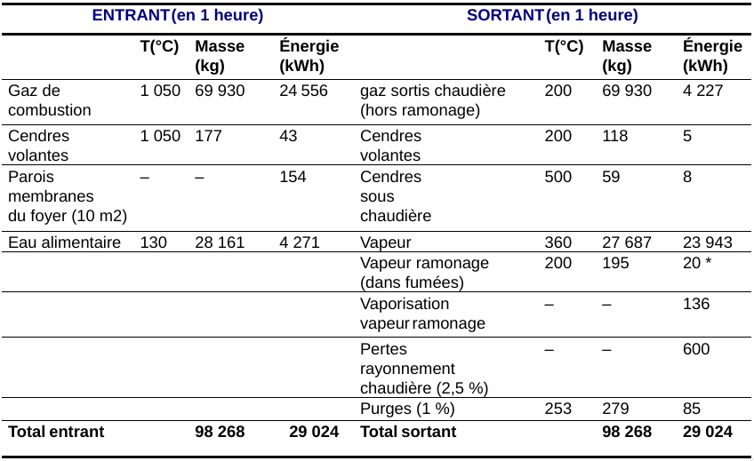
Fig. 14
Dans cet exemple, nous n’avons pas considéré le désurchauffeur, souvent placé entre les faisceaux surchauffeurs. En fait, le bilan ne serait pas modifié, à condition de prendre en compte le débit d’eau alimentaire y compris le débit d’eau de désurchauffe.
L’énergie de la vapeur de ramonage a été calculée de la même manière que l’humidité des gaz. Il a donc été nécessaire d’ajouter côté sortie l’énergie de vaporisation de la vapeur de ramonage (0,7 kWh/kg) fournie par la chaudière et qui ne sera pas récupérée.
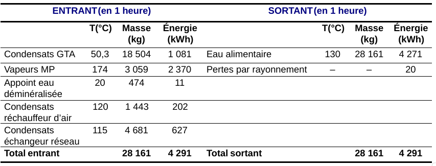
Fig. 15
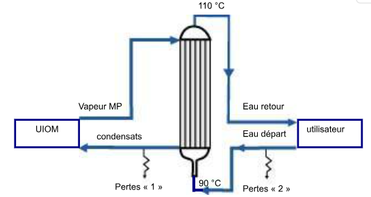
Fig. 16
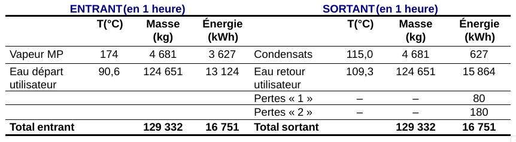
Fig. 17
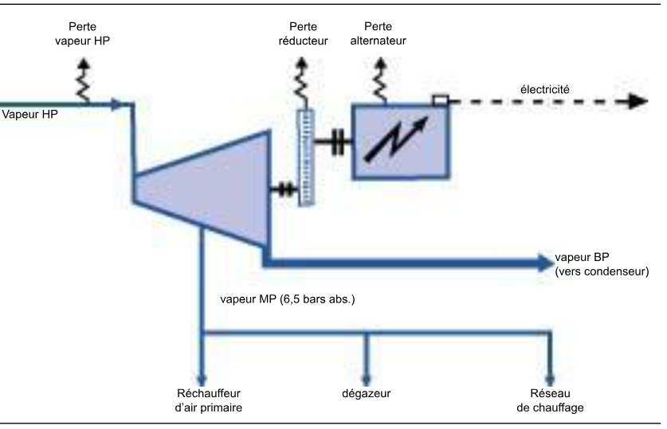
Fig. 18
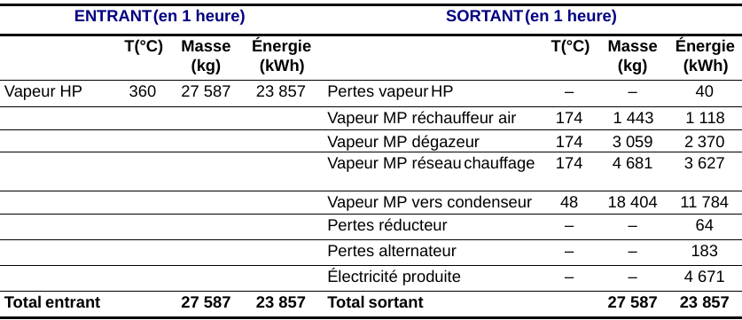
Fig. 19
RemarqueLe circuit d’huile du groupe sert bien sûr à la lubrification et à la régulation du groupe, mais sa fonction est également d’évacuer la chaleur dégagée par la « perte réducteur » (et paliers turbine et alternateur). De même, les pertes de l’alternateur sont évacuées soit par un circuit d’air, soit par un circuit d’eau.
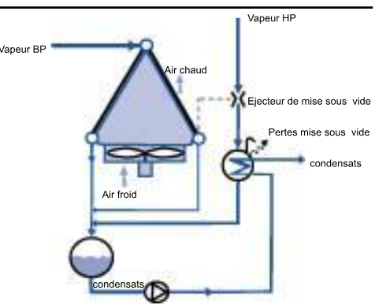
Fig. 20
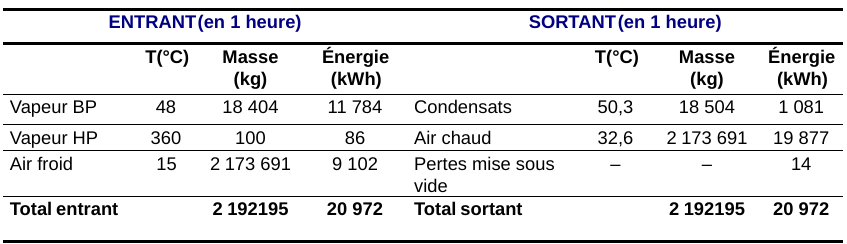
Fig. 21
Réseau électrique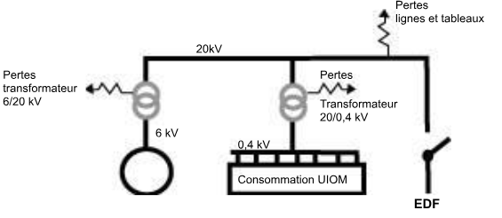
Fig. 22
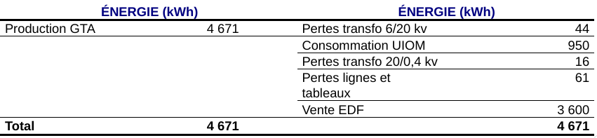
Fig. 23
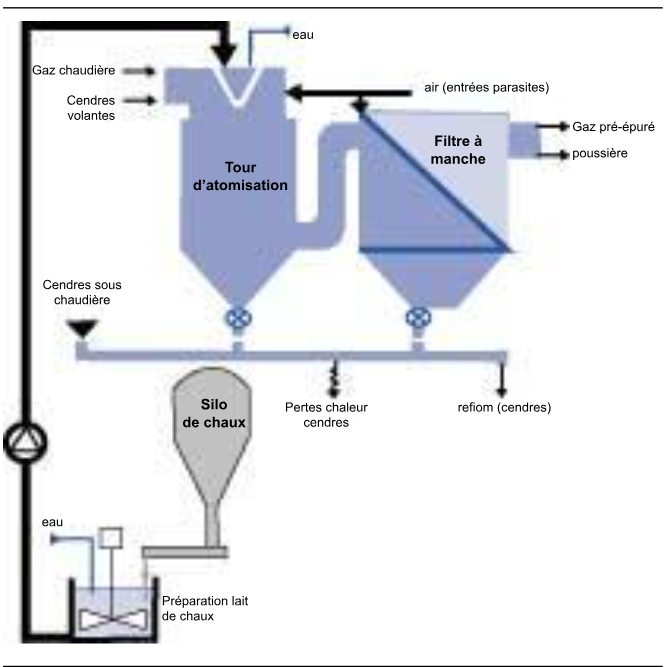
Fig. 24
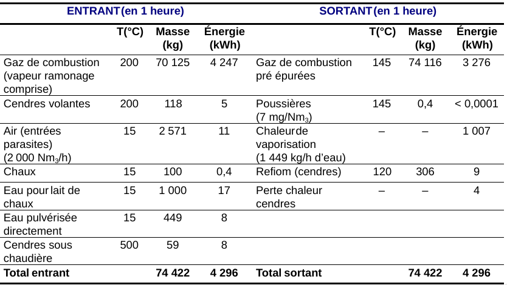
Fig. 25
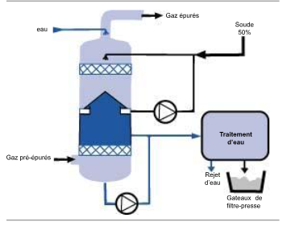
Fig. 26
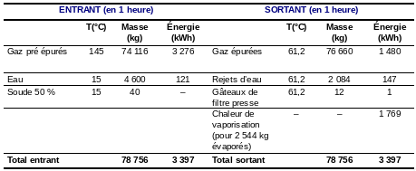
Fig. 27
Les bilans des principaux équipements permettent d’établir le bilan global de l’UIOM :
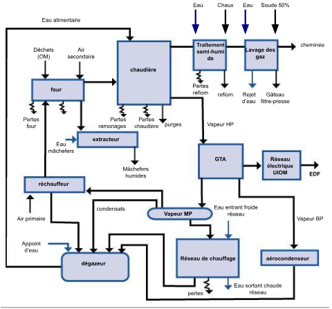
Fig. 28
Ces divers renseignements, et notamment le bilan masse, sont résumés dans le diagramme général présenté en page suivante.
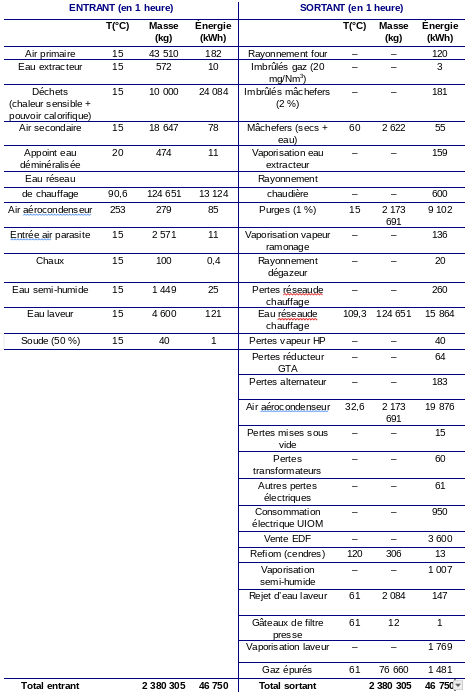
Fig. 29
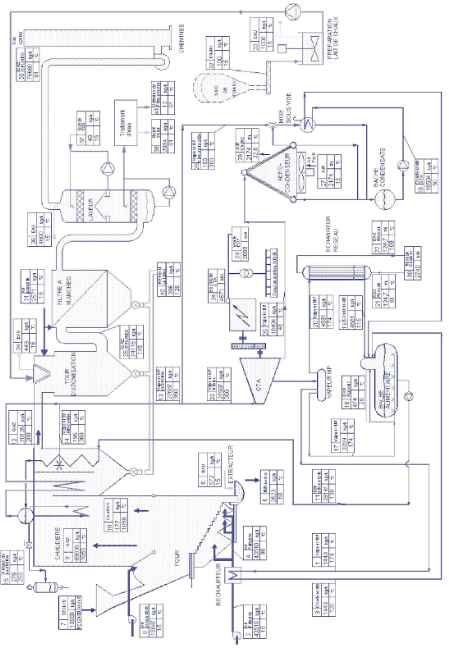
Fig. 30
Les exploitants d’usine s’attachent à définir des rendements afin d’évaluer l’efficacité de leur outil de production. Les bilans réalisés précédemment sont indispensables pour en effectuer le calcul :
Rappel : voir le module 5, page 15
Le rendement est défini traditionnellement comme le rapport de l’énergie nette produite (production de vapeur diminuée de la consommation du réchauffeur d’air de combustion) à l’énergie apportée par le combustible, soit dans notre cas :
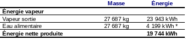
Fig. 31
* valeur ramenée au tonnage vapeur
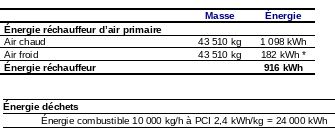
Fig. 32
D’où le calcul du rendement :
equation Rendement = {Énergie nette produite-réchauffeur}{Énergie combustible}= 19 744 – 916 {24 000}=78,45 \ {equation
Les pertes représentent donc 21,55\
En fait, cette méthode ne peut être utilisée que si l’on connaît parfaitement la valeur du PCI du combustible utilisé, c’est-à-dire en pratique lorsqu’on utilise des combustibles commerciaux (charbon, fioul-oil…) dont le PCI est suffisamment bien connu. Dans le cas d’un déchet dont le PCI n’est pas très bien connu, on a recours à la méthode des « pertes séparées » qui consiste à calculer les pertes aussi précisément que possible, pour en déduire le rendement, et ensuite le PCI. Dans notre cas, les pertes seraient calculées comme suit (en négligeant très souvent les termes les plus faibles).
Ce tableau, établi pour une usine type, met en évidence les éléments principaux des pertes, à savoir :
a) On utilise le plus souvent le rendement brut, égal à :
equation {Énergie électrique alternateur}{Énergie déchets}=4 671{24 000} = 19,46 \ {equation
b) Le rendement net, plus intéressant pour les calculs financiers, serait égal à :
equation {Énergie électrique vendue}{Énergie déchets}=3 000{24 000} = 15 \ {equation
De la même manière, on peut parler de rendement énergétique net :
equation {Énergie vendue (thermique + électrique)}{Énergie déchets}=3 600+2740{24 000} = 26,42 \ {equation